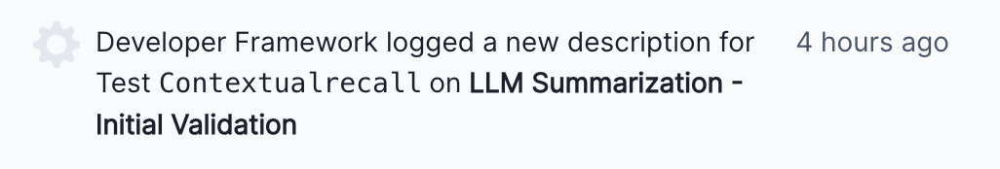
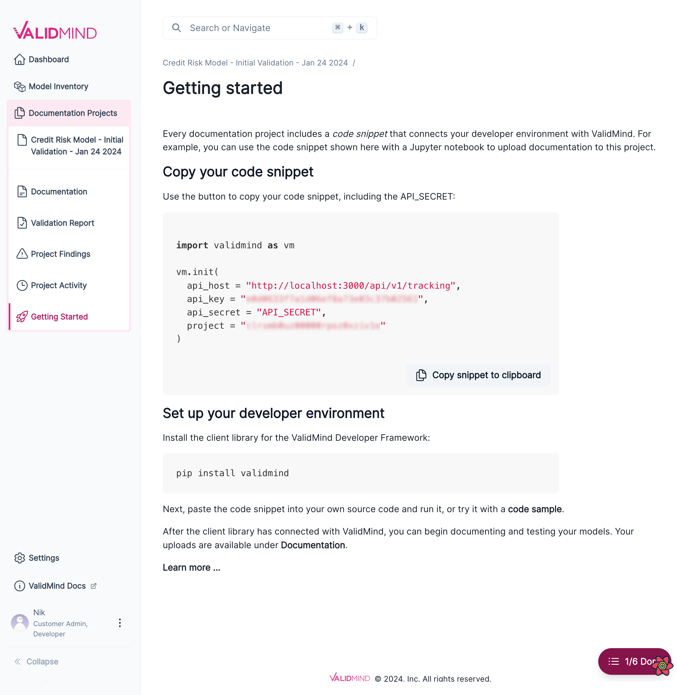

February 14, 2024
Release highlights
We’ve improved the ValidMind user experience, from more supportive documentation templates, easier specification of inputs, and better filtering within the developer framework, to the ability to view which user ran actions within the platform UI.
ValidMind Developer Framework (v1.26.6)
Documentation templates now support tracking each metric result with a unique identifier
Documentation templates have been updated to support logging each metric run as a unique result, making it possible to run the same test across different datasets or models. To make use of this new feature, you simply add a unique result_id identifier as a suffix to a content_id identifier in the content block definition of a metric or test content type.
For example, the following content blocks with the suffixes training_data and test_data enable you to log two individual results for the same test validmind.data_validation.Skewness:
- content_type: test
content_id: validmind.data_validation.Skewness:training_data
- content_type: metric
content_id: validmind.data_validation.Skewness:test_dataYou can configure each of these unique content_id identifiers by passing the appropriate config and inputs in run_documentation_tests() or run_test(). For example, to configure two separate tests for Skewness using different datasets and parameters:
test = vm.tests.run_test(
test_id="validmind.data_validation.Skewness:training_data",
params={
"max_threshold": 1
},
dataset=vm_train_ds,
)
test.log()
test = vm.tests.run_test(
test_id="validmind.data_validation.Skewness:test_data",
params={
"max_threshold": 1.5
},
dataset=vm_test_ds
)
test.log()Try it yourself: Rendering more than one unique result for the same metric
Easier specification of inputs for individual tests with run_documentation_tests()
The run_documentation_tests() function has been updated to allow passing both test inputs and params via the config parameter.
Previously, config could already pass params to each test that you declare. In this example, the test SomeTest receives a custom value for the param min_threshold:
full_suite = vm.run_documentation_tests(
inputs = {
...
},
config={
"validmind.data_validation.SomeTest": {
"min_threshold": 1
}
}
)With the updated function, config can now pass both params and inputs to each declared test. For example, to specify what model should be passed to each individual test instance:
full_suite = vm.run_documentation_tests(
inputs = {
"dataset": vm_dataset,
"model": xgb_model
},
config = {
"validmind..model_validation.Accuracy:xgb_model": {
"params": { threshold: 0.5 },
"inputs": { "model": xgb_model }
},
"validmind..model_validation.Accuracy:lr_model": {
"params": { threshold: 0.3 },
"inputs": { "model": lr_model }
},
}
)Here, the top-level inputs parameter acts as a global inputs parameter, and the individual tests can customize what they see as the input model via their own config parameters.
Developer framework documentation inputs tracking
We have added a new feature that tracks which datasets and models are used when running tests. Now, when you initialize datasets or models with vm.init_dataset() and vm.init_model(), we link those inputs with the test results they generate. This makes it clear which inputs were used for each result, improving transparency and making it easier to understand test outcomes. This update does not require any changes to your code and works with existing init methods.
ValidMind Platform UI (v1.13.13)
Updated events to show who ran the developer framework actions
We are now showing the name of the user who ran the action instead of a generic “Developer Framework” name whenever you generate documentation:
Before

After

Simplified instructions for developers
We simplified the instructions for getting started with the ValidMind Developer Framework in the ValidMind Platform UI. These instructions tell you how to use the code snippet for your model documentation with your own model or with one of our code samples.

Enhancements
- Model owners can edit model details
- Model owners can now edit the values for fields displayed on the model details page. Previously it was only possible to edit custom fields defined by your organization.
- Performance improvements for the ValidMind Platform UI
- We made improvements to page load times on our platform UI for a smoother user experience.
- Added support for filtering model inventory by developers / validators
- Enhanced navigation of the Model Inventory by enabling filtering based on Developers and Validators involved with each model.
- Support for custom model fields in the model inventory
- The model inventory has been updated to allow organizations to add custom fields. This enhancement enables administrators to customize the model inventory data schema according to your specific organizational needs. This can be done by accessing Custom Fields in the Settings page.
The initial release supports the following field types:
- Single Line Text
- Long Text
- Single Select
- Multiple Select
- Checkbox
- Number
- URL
- Date
- Date Time
- Linked Record to User
- Filter for mentions in recent activity comments
- We implemented a toggle feature in the Recent Activity > Comments section to filter and display only specific mentions. By default, all comments where the logged-in user has been tagged are displayed by this filter.
- Expanded rich-text editor support
- Forms in the Findings and Validation Report sections now support the rich-text editor interface. This support enables you to use the editor for your finding descriptions and remediation plans, for example.
Bug fixes
- Invalid content blocks create errors for
run_documentation_tests() -
Fixed an issue where using an invalid test identifier would prevent
run_documentation_tests()from running all available tests. The full test suite now runs as expected, even when an invalid test identifier causes an error for an individual test.
- Show all collapsed sections in documentation table of contents
- Fixed an issue where the table of contents was not displaying every subsection that belongs to the parent section. The table of contents now accurately reflects the complete structure of the documentation, including all subsections.
- Template swap shows the wrong diff
- Fixed an issue where the diff for validation reports was showing incorrectly when swapping templates. The correct diff between the current and the new template is now displayed.
- Clicking on a recent activity item should link to the corresponding content block
- Fixed an issue where clicking on a recent activity item would not redirect you to the corresponding content block. Clicking on a recent item now takes you to the correct content block as expected.
Documentation updates
- New user management documentation
- Our user guide now includes end-to-end instructions for managing users on the ValidMind platform. This new content covers common tasks such as inviting new users, adding them to user groups, and managing roles and permissions. Learn more …
- Updated sample notebooks with current
input_idusage -
We updated our sample notebooks to show the current, recommended usage for
input_idwhen callingvm.init_dataset()orvm.init_model().
Learn more:
- QuickStart for Customer Churn Model Documentation — Full Suite
- Sentiment Analysis of Financial Data Using a Large Language Model (LLM)
- Summarization of Financial Data Using a Large Language Model (LLM)
- Sentiment Analysis of Financial Data Using Hugging Face NLP Models
- Summarization of Financial Data Using Hugging Face NLP models
- Prompt Validation for Large Language Models (LLMs)
- QuickStart for California Housing Regression Model Documentation — Full Suite
- Configuring and Using Dataset Features
How to upgrade
To access the latest version of the ValidMind Platform UI, reload your browser tab.
To upgrade the ValidMind Developer Framework:
Using JupyterHub: Reload your browser tab and re-run the
%pip install --upgrade validmindcell.In your own developer environment: Restart your notebook and re-run:
%pip install validmind